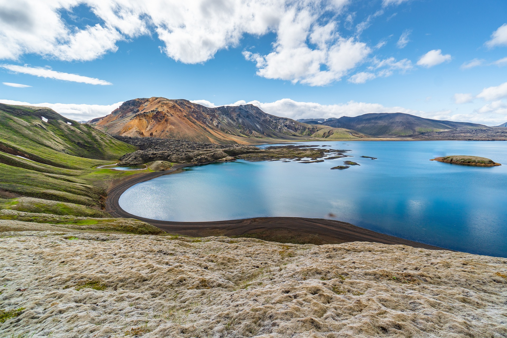
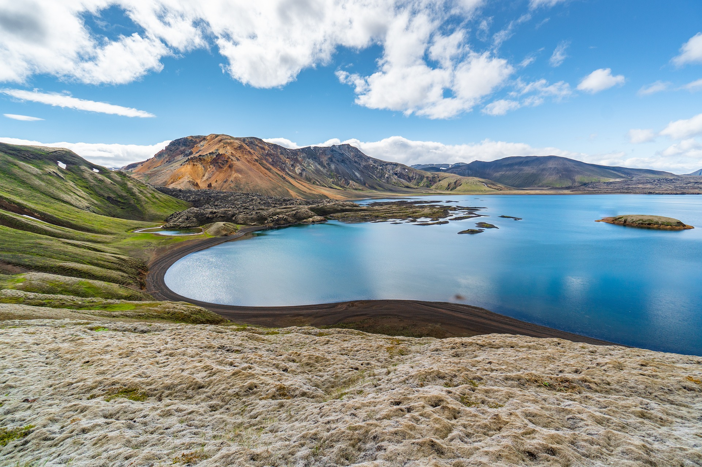

아직 가보지 않았지만 가보고 싶은 여행지는?
아이슬란드(Ísland or Iceland)!
지인의 아이슬란드 여행 경험담을 들었는데, 눈길 속 사고가 일어나는 등 우여곡절이 있었지만 그래도 다시 가고 싶을만큼 좋았다고 했다
멀어서 자세힌 보이지 않았지만 순록이 뛰어가는 것도 구경하고 다행히 일정 내에 오로라를 볼수 있었다고 한다.
사진으로는 담기지 않는다할만큼 아름다웠고 다시 보고싶은게 있다면 오로라라는 이야기를 듣고 언젠가 가보고 싶은 나라로 생각하게 되었다.

 

-아이슬란드 사진, 출처:pixabay-